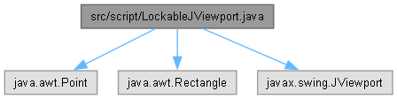

|
CirclePack-JA
doc with Opus 4.6
|
|
CirclePack-JA
doc with Opus 4.6
|
import java.awt.Point;import java.awt.Rectangle;import javax.swing.JViewport;
Go to the source code of this file.
Classes | |
| class | script.LockableJViewport |
| LockableJViewport is a JViewport with the added functionality of view locking. When locked, the viewport will ignore requests to change the view position. More... | |
Packages | |
| package | script |